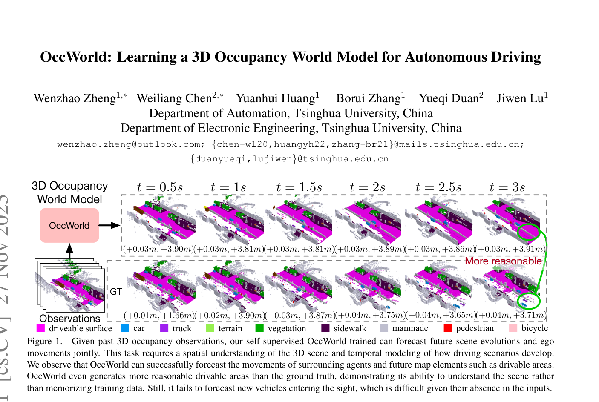
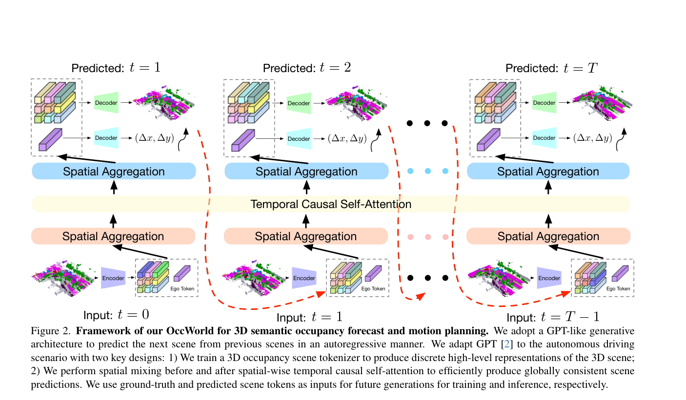
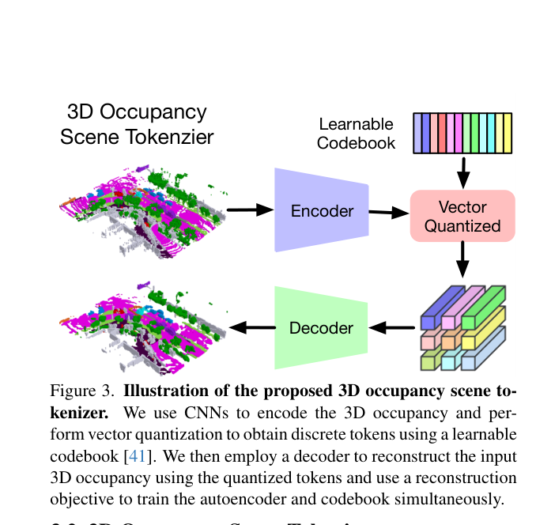

OccWorld: Learning a 3D Occupancy World Model for Autonomous Driving
OccWorld 将 3D occupancy 量化为离散 scene tokens，并用 GPT-like spatial-temporal generative transformer 自回归预测未来占据和 ego trajectory，实现细粒度 3D 场景演化建模。
3D occupancy、scene tokenizer、vector quantization、GPT-like transformer、spatial-temporal generation、4D occupancy forecasting、motion planning、nuScenes
3D occupancy world model / GPT-like generative transformer
是，代码、可视化、训练日志和预训练模型公开
很高：3D occupancy 表示世界模型代表
计划公网链接：https://ixgnozeix.github.io/paper-reports/report/occworld/
1. 论文速览
OccWorld 的核心选择是不用 3D boxes 或像素视频表示世界，而用 3D occupancy：它能表达细粒度结构，标注成本相对低，也兼容 vision/LiDAR。方法先训练 reconstruction-based scene tokenizer，把 3D occupancy 压成离散 tokens；再用 GPT-like spatial-temporal transformer 预测后续 scene tokens 和 ego tokens；最后解码未来 occupancy 并输出 ego trajectory。论文在 nuScenes 上展示 4D occupancy forecasting 和 motion planning，且在 Figure 1 中明确给出失败边界：对输入视野之外新进入的车辆预测困难。
2. 研究问题与动机
预测 3D box 只能描述已知对象中心和尺寸，无法刻画道路边界、可行驶区域、遮挡结构和细粒度障碍；像素世界模型又难以验证几何安全。OccWorld 选择 occupancy 是为了在可计算的 3D 网格中同时表达动态场景和 ego 运动，让世界模型输出更接近规划需要的空间约束。
4. 方法详解
Scene tokenizer 使用 CNN 将 3D occupancy 转成 BEV-like latent，再通过 vector quantization 得到离散 scene tokens，并用 decoder 重建 occupancy。World model 部分采用 spatial-temporal generative transformer：空间维关注同一时刻的 occupancy token 关系，时间维自回归建模过去到未来的场景演化，同时预测 ego movement tokens。规划模块利用未来 occupancy 和 ego trajectory 计算 motion planning 输出。训练包括 tokenizer 重建和 transformer 未来 token 预测。
5. 实验与结果
实验包括 4D occupancy forecasting 和 motion planning。Table 2 与 IL/NMP/FF/EO/ST-P3/UniAD/VAD 等比较 L2 和 Collision Rate；论文强调 OccWorld 在不使用 instance/map supervision 的情况下取得有竞争力规划结果。Figure 1 定性展示模型能预测动态 agents、drivable area 等未来结构，甚至在部分区域生成比 GT 更合理的可行驶区域；同时也承认无法预测输入中不存在的新车进入视野。证据缺口是 occupancy 标签质量和空间分辨率会限制上限。
6. 复现要点
复现路径：准备 nuScenes occupancy 标签，训练 tokenizer 重建当前 occupancy，再训练 spatial-temporal transformer 预测未来 tokens，最后跑 planning metric。官方仓库提供 visualization、training log 和 pretrained model，可先运行 visualize_demo.py。硬件需求中等偏高，取决于 occupancy grid 分辨率和 token 数。阻塞点是 occupancy 数据准备、VQ codebook collapse、长 horizon 自回归误差。验收标准是 4D occupancy mIoU/VPQ 等预测指标和 L2/Collision 规划指标趋势。
7. 分析、局限与边界
OccWorld 的价值是把世界模型放到规划友好的 3D occupancy 空间，使预测结果比像素视频更容易用于安全约束。它的局限也明确：不可见对象、label 噪声、grid 分辨率和自回归误差会限制未来预测。后续可与相机 raw video world model 融合：像素模型补语义细节，occupancy 模型负责几何验证。
8. 组会问答准备
A：box 只能描述实例，不能表达自由空间、道路边界和细粒度占据结构。
A：把高维 3D occupancy 压成离散 token，使 GPT-like transformer 可以高效自回归预测未来。
A：Drive-WM 预测多视角像素视频；OccWorld 预测 3D occupancy，几何更可验证但视觉细节少。
A：难以预测输入中不存在、未来才进入视野的新车。
A：先用官方 pretrained model 跑 visualization，确认 occupancy 数据链路，再训练 tokenizer 和 transformer。
9. 补充图解与附录证据



我的阅读笔记
适合作为“结构化 3D WM”代表。可与 Drive-WM/GAIA-1 共同构成像素-多视角-occupancy 三类世界模型路线图。